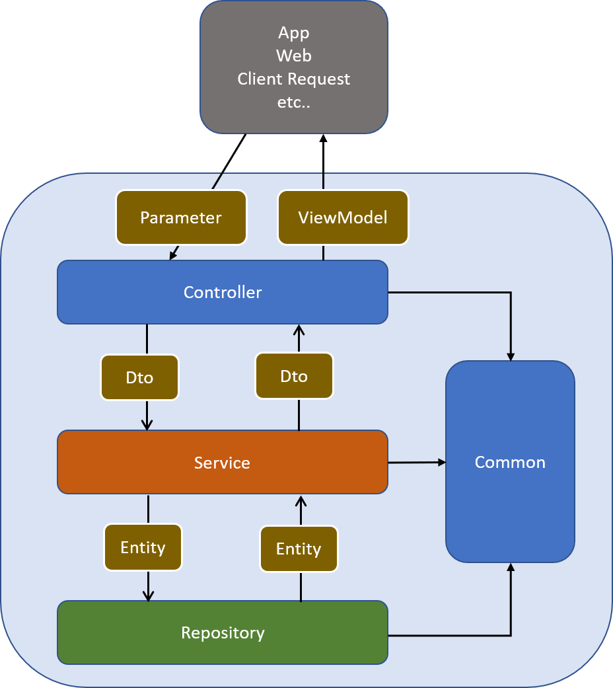

軟體分層設計模式是我這幾年專案必會使用的架構，它的效益在多人團隊分工上有極大的效益，且能有效專注修改區域，提高共用性，讓我們來看看這是怎樣的架構。
基本說明
分層架構是運用最為廣泛的架構模式，幾乎每個軟體系統都需要通過層（Layer）來隔離不同的關注點（Concern Point），以此應對不同需求的變化，使得這種變化可以獨立進行；此外，分層架構模式還是隔離業務複雜度與技術複雜度的利器。
分層架構模式
- 展示層 (Presentation Layer)：接收外部請求( view、app、ap 等等 )，呼叫業務層，並將業務層回傳的 dto 轉成 viewmodel 回傳給外部。
- 業務層 (Business Layer)：接收展示層請求，專注處理商業邏輯，呼叫資料層，並將資料層回傳的 model 轉換成 dto 回傳給展示層。
- 資料層 (Data Layer)：專注處理資料，資料來源來自資料庫或其他其他服務，接收業務層呼叫，執行資料處理回傳 model。
- 共用層 (Common Layer)：將各層依賴的 entity、dto、enum 等放入此層，因共用層與其他層有參考關聯，此層物件務必力求簡單，且不可有商業邏輯。
受了 MRKT 大大的薰陶
我習慣用以下方式命名
- 展示層 : Controller
- 業務層 : Service
- 資料層 : Repoitory
- 共用層 : Common
。
我的實作
專案結構
- Sla.Common
- Enum
- Dto
- Entity
- Sla.WebApi
- Parmeter
- ViewModel
- Sla.Service
- Interface
- Implement
- Sla.Repository
- Interface
- Implement
Sla.Common
共用層，跨層的 entity、dto、enum 放在此專案內
Sla.WebApi
展示層 / Coontroller，以 .Net 來說，這裡通常是 MVC 專案 或 WebApi 專案，有接收的 Parameter 與 回傳 的 ViewModel 兩種類別。
Sla.Service
商業邏輯層 / Service，商業邏輯放置於此，會定義服務介面並實作介面，讓展示層依賴介面而不是依賴實作。接收展示層的 參數 Dto 並回傳 實體 Dto
Sla.Repository
資料層 / Repository，資料存取放置於此，會定義資料層介面並實作介面，讓商業邏輯層依賴介面而不是依賴實作。接收商業邏層的 參數 Entity 並回傳 實體 Entity
心得
當我是一個人開發的時候，分層設計真的感受不深，更多的是為何要弄得這麼複雜，但隨著工作團隊的擴展，多人合作開發的時候，分層設計就發揮出了它的價值，各個成員專注各自的層發開，不會被其他成員影響，當需要修改或擴充時，若是要改 UI，只需要異動展示層，若是新增商業邏輯則只需專注業務層，而是為要換第三方配合廠商或者更換資料庫，則只需專注在資料層去修改，而各層的物件又可以依不同情境做重用，不需重複開發，可謂好處多多。
效益整理如下
- 適合多人團隊分工時不互相影響 (一條龍開發時感受不深)
- 分層專注，可以專注修改，不會牽一髮動全身
但真的能達到這樣的效益，其實還有一些必要前提
- 物件設計須符合 SOLID 原則
- 各層依賴介面 (Interface)，不依賴實作
- 專案需導入 DI Framework，作到依賴注入，達成控制反轉 (IoC)
- 撰寫單元測試 (Unit Test) 保護每次修改
- 合理的設計各層職責物件，業務層更為重要